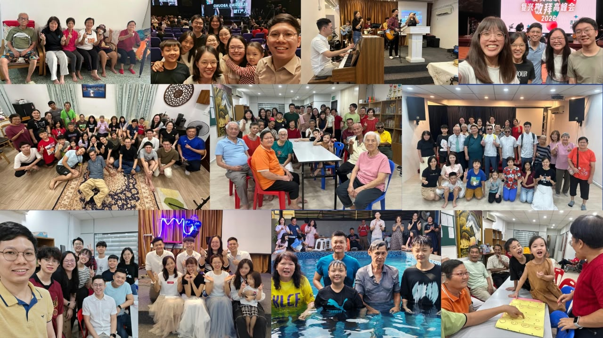

Sun每周
主日崇拜
每逢星期日 · 上午 10:00 – 中午 12:00
一同敬拜上帝、聆听祂的话语，并享受团契时光。
关于我们
认识一个委身于敬拜上帝、在祂的话语中成长、建立真挚团契，并以基督的爱关怀他人的群体。
接棒者基督教会是一个让我们一同敬拜上帝、在信心中成长，并彼此鼓励的基督徒群体。
我们盼望建立一个温暖而友善的团契，让大家建立真挚的关系、更加认识圣经，并在日常生活中活出信仰。
一同敬拜上帝，并在生活中尊荣祂。
建立真挚的关系，彼此鼓励，一同成长。
借着上帝的话语、祷告以及与祂更深的关系，在信心中成长。
分享基督的爱，关怀我们的社区，并将爱延伸到更远的地方。
最新活动
通过我们的常规聚会、敬拜、课程和团契活动，与 KLCF 保持联系。
每逢星期日 · 上午 10:00 – 中午 12:00
一同敬拜上帝、聆听祂的话语，并享受团契时光。
每逢星期日 · 上午 10:00 – 中午 12:00
让孩子们一同敬拜上帝，在信仰中成长。
每逢星期日 · 上午 10:00 – 10:30
一同祷告，将教会、团契与彼此的需要交托给上帝。
每逢星期六 · 下午 3:00 – 5:00
适合孩子们参与的学习与团契时间。
隔周星期六 · 晚上 7:00 – 9:00
青年人彼此认识、分享，并一同在信仰中成长。
隔周星期六 · 下午 5:30 – 6:30
免费学习钢琴、鼓和吉他。地点：KLCF 三楼。
KLCF 的生活
一同敬拜、团契、学习，以及组成 KLCF 这个大家庭的每一个人。

与我们联系
如果您有任何问题，欢迎联系我们；也可以关注 KLCF，获取最新的团契消息与公告。
24-1, Jalan 9/23A, Medan Makmur Off Jalan Usahawan, Setapak, Kuala Lumpur, Malaysia, 53200
在 Google 地图中打开 →